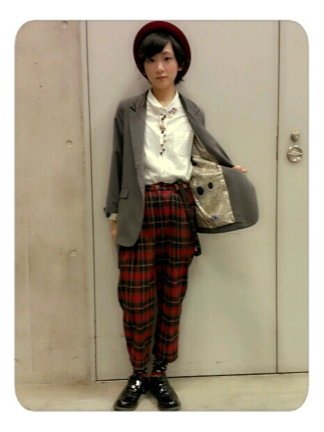

| 2012/10 27 Sat | 横浜個別握手会ヽ( ・∀・)ノ |
今日は横浜にて個別握手会がありました〜ヽ(・∀・)ノ
来てくださったみなさんありがとうございました！
沢山来てくださって、本当に嬉しいです♪
まずは今日のお洋服をちらっ

ボーイッシュ

この帽子お気に入り
全部秋田でお母さんが買ってくれたんよ!!
うひひっ
そしてっ...
今日で３ｒｄシングルの握手会が終了となります。
まだ似顔絵会がありますが一区切りつきました。
みなさん支えて下さってありがとうございました！
みなさんが会いに来てくださったから、私は学ぶ事が出来ました。嬉しくなりました。反省しました。心が暖かくなりました。
みなさんは私にとって本当に大きな存在です。
握手会だけではなく、コメントで言葉をかけて下さったり、イベントに来てくださったり沢山支えて下さいました。
みなさん、これからもよろしくお願いします!
沢山喋って楽しかった〜
あと、風邪すっかりよくなりましたよ！

そしてゆみ姉が最後の握手会でした。
きっとゆみ姉もみなさんも思うことが沢山あると思います。
私も沢山あります。
でもやっぱり、笑顔でね!!
まだ卒業じゃないし！
まだまだゆみ姉のおしり触るぞ〜
(笑)
では次の握手会でお会いしましょう。
へばなっ!!
コメント(247)
2012/10/27 21:30